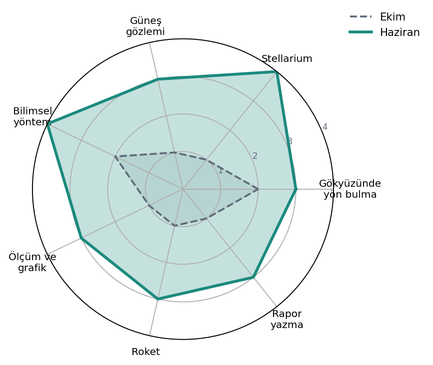
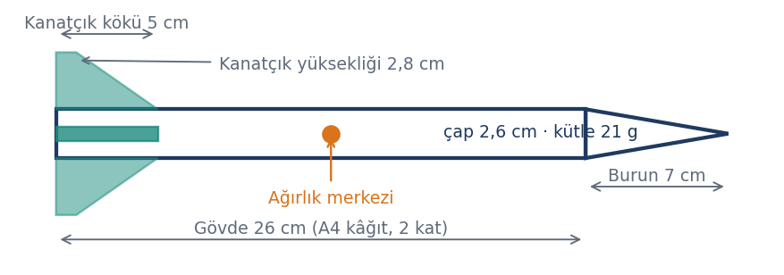
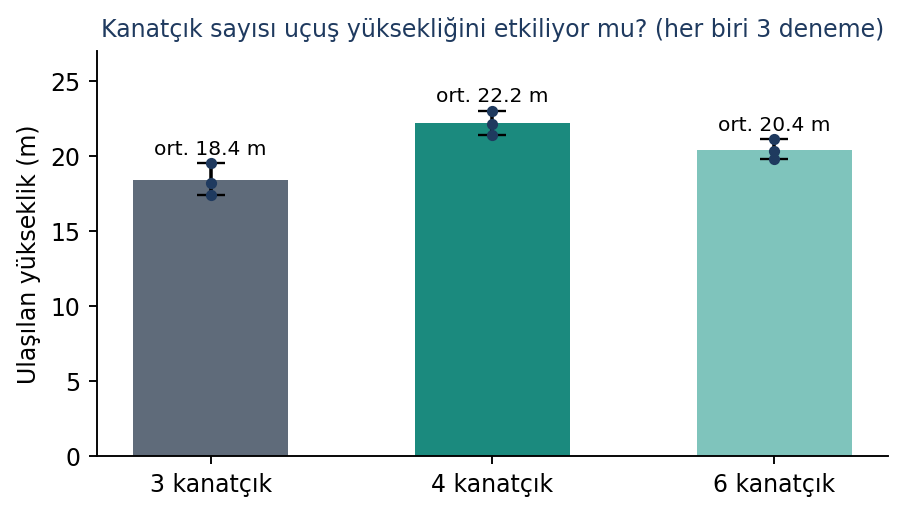
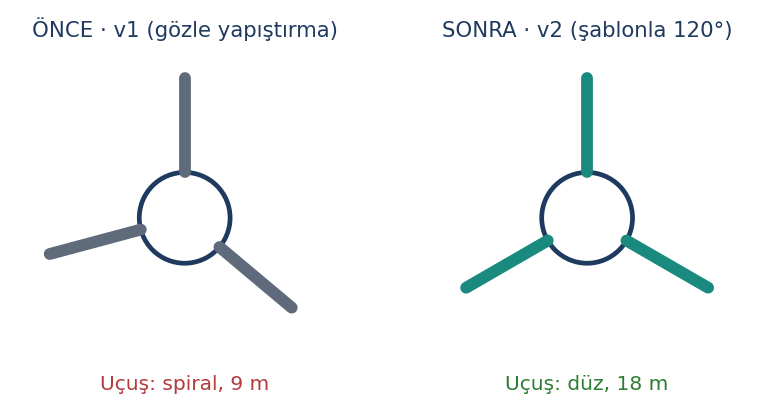
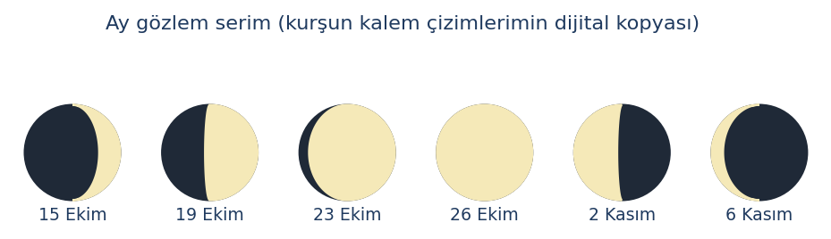
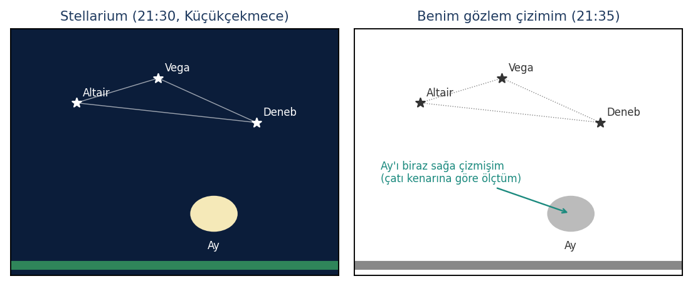

- Ana sayfa
- Örnek portfolyo
- Bölüm 5
Atölye II: Bilim ve Keşif Laboratuvarı
Kanatçık deneyi yıldız projesi, gözlem günlüğü ve Stellarium hata sayfası.
BKBilim ve Keşif Laboratuvarı (Astronomi)Kılavuzda 5.2 Bilim ve Keşif Laboratuvarı rehberi
Atölye kapağı
Kılavuzda 4.1 Atölye kapağı
| Atölye kodu | BK |
| Derslik ve düzen | Fen sınıfı, 6’lı blok; gece gözlemleri kurum gözlem alanında |
| Öğretmenim | Bilim ve Keşif Laboratuvarı öğretmeni |
| Ana çalışmalar | Gece gözlemi, güneş gözlemi, Stellarium, mini roket deneyi |
Bu atölyeyi neden seçtim?
Dedemin dürbünüyle Ay’ı gördüğüm geceden beri gökyüzünü daha iyi tanımak istiyordum. Ayrıca “deney” kelimesinin ders kitabında değil, gerçekten ölçüm yaparak nasıl bir şey olduğunu merak ediyordum.
Yılın başında bu alanda ne biliyordum?
- Büyükayı’yı tanıyordum, başka takımyıldız bilmiyordum.
- Ay’ın evrelerinin Dünya’nın gölgesi yüzünden oluştuğunu sanıyordum. Ekim’deki gözlem serimde bunun yanlış olduğunu kendim gördüm: Evreler, Ay’ın Güneş tarafından aydınlatılan yarısını farklı açılardan görmemizden oluşuyor.
- Hipotez kurmayı biliyordum ama değişkenleri sabit tutmanın ne kadar zor olduğunu bilmiyordum.
Beceri haritası
Kılavuzda 4.2 Beceri haritası
1 = Duydum, 2 = Deniyorum, 3 = Yapabiliyorum, 4 = Öğretebilirim
| Beceri | Ekim | Haziran | Ne değişti? |
|---|---|---|---|
| Gökyüzünde yön bulma, takımyıldızlar | 2 | 3 | Yaz Üçgeni, Kraliçe ve Avcı’yı bulabiliyorum; Büyükayı’dan Arktürüs’e “kavis” yöntemini biliyorum. |
| Stellarium ile gözlem planlama | 1 | 4 | Gece Gözlemi II’nin planını ben hazırladım; arkadaşlarıma ayarları öğrettim. |
| Güvenli güneş gözlemi | 1 | 3 | Filtre kontrolünü ve kuralları biliyorum; gözlemi öğretmen gözetiminde yaptım. |
| Bilimsel yöntem | 2 | 4 | Kanatçık deneyinde bağımsız, bağımlı ve sabit değişkenleri ayırdım. |
| Ölçüm, veri tablosu, grafik | 1 | 3 | Açı yöntemiyle yükseklik ölçüp grafiğini Python ile çizdim. |
| Mini roket ve fırlatma güvenliği | 1 | 3 | Kendi roketimi yaptım; güvenlik listesini her fırlatmada doldurdum. |
| Bilimsel rapor yazma | 1 | 3 | Hata kaynaklarını da yazan bir deney raporu hazırladım. |

Yıldız proje: Kanatçık sayısı roketin uçuş yüksekliğini etkiler mi?
Kılavuzda 4.3 Yıldız proje
| Ekip | Roket Ekibi: Deniz K., Ali R., Zeynep A. |
| Süre | Mart – Nisan 2027 (4 atölye günü) |
| Araçlar | Hava basınçlı fırlatıcı (manometreli), kâğıt gövdeli mini roket, pipetli açıölçer (klinometre), şerit metre, Python (matplotlib) |
| Benim rolüm | Ölçüm sorumlusu: açı okuma, veri tablosu ve grafik |
1. Problem ve araştırma sorusu
İlk roketimiz spiral çizerek sadece 9 metreye çıktı (bkz. 6. adım). Kanatçıkları düzelttikten sonra merak ettik: Kanatçık sayısı roketin ne kadar yükseğe çıkacağını etkiler mi?
2. Araştırma ve hipotez
Okuduğumuz kaynaklarda kanatçıkların roketi rüzgâr gülü gibi düz tuttuğunu, ama her kanatçığın havayla sürtünmeyi (sürüklemeyi) artırdığını öğrendik. Hipotezimiz: “Kanatçık sayısı arttıkça roket daha düz uçar ve daha yükseğe çıkar.”
3. Deney tasarımı
| Değişken türü | Bizim deneyimizde |
|---|---|
| Bağımsız (değiştirdiğimiz) | Kanatçık sayısı: 3, 4 ve 6 |
| Bağımlı (ölçtüğümüz) | Roketin ulaştığı en yüksek nokta (m) |
| Sabit tuttuklarımız | Gövde ve burun ölçüleri; roket kütlesi 21 g (±1 g, burna eklenen kil ile eşitlendi); fırlatıcı basıncı 3 bar; fırlatma açısı 80°; aynı gün, aynı yer, aynı ölçüm noktası |

Yüksekliği nasıl ölçtük? Fırlatıcıdan 15 metre uzakta durup roketin en yüksek noktasını açıölçerle gördüm. Yükseklik = 15 × tan(açı) + 1,4 m (göz yüksekliğim). Örneğin açı 54,1° ise: 15 × 1,38 + 1,4 ≈ 22,1 m.
4. Yapım ve ölçüm
| Roket | Deneme | Okunan açı | Yükseklik (m) | Not |
|---|---|---|---|---|
| 3 kanatçık | 1, 2, 3 | 48,2°; 50,4°; 46,8° | 18,2; 19,5; 17,4 | Hafif yalpalama |
| 4 kanatçık | 1, 2, 3 | 54,1°; 53,1°; 55,2° | 22,1; 21,4; 23,0 | En düz uçuş |
| 6 kanatçık | 1, 2, 3 | 51,6°; 50,8°; 52,7° | 20,3; 19,8; 21,1 | Düz ama erken yavaşladı |
5. Test ve sonuç grafiği

6. İyileştirme: önce ve sonra

7. Sonuç ve hata kaynakları
Hipotezimiz kısmen doğrulandı. 3 kanatçıktan 4 kanatçığa geçince roket ortalama 3,8 m daha yükseğe çıktı. Ama 6 kanatçıkta yükseklik yeniden azaldı. Bunun nedeninin, fazla kanatçığın sürüklemeyi artırması olduğunu düşünüyoruz. Yani “ne kadar çok, o kadar iyi” değil; bir denge noktası var.
- Rüzgâr: 2. denemeler sırasında hafif rüzgâr vardı. Her roketi aynı rüzgârda fırlatamadık.
- Açı okuma: Açıölçerle okuma yaparken yaklaşık ±2° hata yapabiliyorum. Bu, yükseklikte yaklaşık ±1 m fark demek.
- Deneme sayısı: Her roket için sadece 3 deneme yaptık. Daha emin olmak için en az 5 deneme gerekirdi.
Süreç seçkisi
Kılavuzda 4.4 Süreç seçkisi
Bu atölyeden beş kanıt seçtim. Gözlem günlüğü, Stellarium karşılaştırması ve güvenlik listesi atölyenin zorunlu kanıtlarıdır.
Gözlem günlüğüm
Zorunlu kanıt
| Tarih ve saat | Yer ve hava | Araç | Gözlemim |
|---|---|---|---|
| 15 Ekim, 19:10 | Ev balkonu, açık | Çıplak göz | Batıda ince hilal; Ay serisinin ilk kaydı. |
| 19 Ekim, 21:30 | Kurum gözlem alanı, açık | Dürbün 10×50 | İlk dördün; Yaz Üçgeni’ni buldum. Stellarium ile karşılaştırdım (Kanıt 2). |
| 14 Kasım, 20:30 | Kurum gözlem alanı, az bulutlu | Kurum teleskobu | Satürn’ün halkalarını ilk kez gördüm! Halka biraz ince görünüyordu. |
| 20 Mart, 11:00 | Kurum bahçesi, açık | Güneş filtreli teleskop | İki güneş lekesi grubu çizdim (Kanıt 4). |
- Tarih ve hafta
- Ekim 2026 – Mart 2027
- Bu ne?
- Yıl boyunca tuttuğum gözlem defterinden seçtiğim kayıtlar ve Ekim–Kasım Ay evresi serimin çizimleri.
- Bireysel ya da grup, rolüm
- Bireysel (Ay serisi) ve grup gözlemleri (kurum gözlem alanı)
- Ne öğrendim?
- Ay serisini çizince evrelerin Dünya’nın gölgesiyle ilgisi olmadığını kendim gördüm: Dolunayda Dünya’nın gölgesi Ay’a düşseydi Ay tutulması olurdu.
- Yapay zekâ
- Hayır
- Dosya adı
2026-10-15_BK_gozlem-gunlugu.pdf
Stellarium ve gerçek gözlem karşılaştırması
Zorunlu kanıt
- Tarih ve hafta
- 19 Ekim 2026
- Bu ne?
- Stellarium’da aynı saat ve konumu ayarlayıp gökyüzü görüntüsünü kendi gözlem çizimimle yan yana koydum.
- Bireysel ya da grup, rolüm
- Bireysel
- Ne öğrendim?
- Yıldızların konumunu doğru çizmişim, ama Ay’ı biraz sağa kaydırmışım. Ölçüyü çatı kenarına göre aldığım için bakış açım değişmişti. Sabit bir referans noktası seçmem gerekiyor.
- Yapay zekâ
- Hayır
- Dosya adı
2026-10-19_BK_stellarium-karsilastirma.png
Satürn'ün halkaları
- Tarih ve hafta
- 14 Kasım 2026
- Bu ne?
- Kurum teleskobuyla Satürn’ü gözlemledim ve halkalarını çizdim. Halkalar beklediğimden ince görünüyordu.
- Bireysel ya da grup, rolüm
- Grup gözlemi; teleskop sırası ve kayıt tablosu bendeydi.
- Ne öğrendim?
- Öğretmenimiz, Satürn’ün halkalarını bu yıllarda Dünya’dan neredeyse yandan gördüğümüz için ince göründüğünü anlattı. Gördüğümüz şey bakış açımıza bağlı. Bu gözlem, Yazılım ve YZ atölyesindeki “Satürn’ün kaç uydusu var?” araştırmamı da başlattı.
- Yapay zekâ
- Hayır
- Dosya adı
2026-11-14_BK_saturn-cizim.jpg
Güvenli güneş gözlemi ve güvenlik listesi
Zorunlu kanıt| Güvenlik kontrolü | Durum |
|---|---|
| Filtre teleskobun ön ucuna takılı ve sağlam mı? (öğretmen kontrol etti) | ☑ |
| Arayıcı dürbünün kapağı kapalı mı? | ☑ |
| Güneşe asla filtresiz bakılmayacağı tekrar edildi mi? | ☑ |
| Telefonla göz merceğinden fotoğraf çekilmeyecek | ☑ |
| Öğretmen imzası | İmzalı (taranmış form dosyada) |
- Tarih ve hafta
- 20 Mart 2027
- Bu ne?
- Ekinoks gününde güneş filtreli teleskopla iki güneş lekesi grubu gözlemleyip çizdim. Gözlemden önce güvenlik listesini doldurduk.
- Bireysel ya da grup, rolüm
- Grup gözlemi. Ben kayıt tuttum ve leke çizimini yaptım.
- Ne öğrendim?
- Güneş lekelerinin Güneş’in daha “soğuk” bölgeleri olduğunu, ama yine de binlerce derece sıcak olduğunu öğrendim. Güvenlik kuralları sıkıcı değil, gözlerimizi koruyor.
- Yapay zekâ
- Hayır
- Dosya adı
2027-03-20_BK_gunes-lekesi-ve-guvenlik.pdf
Gece Gözlemi II planı
- Tarih ve hafta
- 22 Mayıs 2027
- Bu ne?
- Stellarium ile Gece Gözlemi II’nin planını hazırladım: gözlem saatleri, sırasıyla bakılacak gök cisimleri (Ay’ın kraterleri, Büyükayı’dan Arktürüs’e yön bulma, Vega) ve bulutlu hava için B planı.
- Bireysel ya da grup, rolüm
- Bireysel plan; sınıfa sundum.
- Ne öğrendim?
- Plan yapmak gözlemi kolaylaştırıyor, ama hava her şeyi değiştirebiliyor: Gözlemimiz bulut yüzünden ertelendi. Bu durum köprü sayfasındaki fikrimin çıkış noktası oldu.
- Yapay zekâ
- Hayır
- Dosya adı
2027-05-22_BK_gece-gozlemi-2-plani.pdf
Hata sayfası: Stellarium’daki Ay neden yanlış yerdeydi?
Kılavuzda 4.5 Hata sayfası
Ne oldu?
İlk Stellarium karşılaştırmamda programdaki Ay ile gördüğüm Ay hiç uymadı. Programda Ay batmak üzereydi, oysa ben onu güneydoğuda, yüksekte görüyordum. Önce gözlemimi yanlış yaptığımı düşündüm.
Neden oldu?
Stellarium’un konum ayarı başka bir şehirde ve saat dilimi UTC olarak kalmıştı. Yani program bana 3 saat önceki ve başka bir yerdeki gökyüzünü gösteriyordu.
Nasıl çözdüm?
Konumu Küçükçekmece, saat dilimini UTC+3 yaptım ve tarih ile saat bilgisini gözlem defterimle eşitledim. İkinci karşılaştırmada yıldızlar neredeyse birebir uydu (Kanıt 2).
Bir daha olsa ne yapardım?
Bir aracı kullanmadan önce ayarlarını kontrol ederdim. Bu hata bana bir verinin “ne zaman ve nerede” bilgisi olmadan anlamsız olduğunu öğretti. Bulut Avcısı’nda her fotoğrafın saatini kaydetmemiz de bu dersten geldi.
Atölye yansıması
Kılavuzda 4.6 Atölye yansıması
Bu atölyede öğrendiğim en önemli şey neydi?
Bir deneyde asıl zor olanın ölçmek değil, diğer her şeyi sabit tutmak olduğunu öğrendim. Rüzgârı sabit tutamadık, bunu da raporumuza yazdık. Doğru yazılmış bir hata kaynağı da bilgidir.
Bu atölye bana kendim hakkında ne öğretti?
Sabırsız biri olduğumu düşünürdüm, ama bir ay boyunca her akşam Ay’ı çizebildim. Merak ettiğim bir şey için sabırlı olabiliyorum.
Bu alanda bir sonraki adımım ne olurdu?
Gözlem notlarımı ve hava verisini birlikte kaydedip “Hangi koşulda iyi gözlem yapılır?” sorusuna veriyle cevap aramak istiyorum.